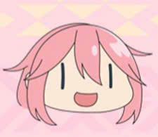
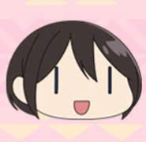
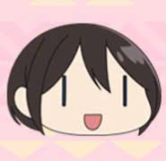

Giới thiệu về Yuru Camp
Yuru Camp, hay còn gọi là Laid-Back Camp, là một bộ anime nổi tiếng của Nhật Bản, kể về những cuộc phiêu lưu cắm trại của một nhóm bạn trẻ. Bộ truyện tập trung vào cuộc sống hàng ngày và những trải nghiệm tuyệt vời khi khám phá thiên nhiên qua các chuyến đi cắm trại.
Bộ anime này nổi bật với hình ảnh đẹp mắt, âm nhạc nhẹ nhàng và câu chuyện ấm áp về tình bạn và sự gắn kết với thiên nhiên. Yuru Camp không chỉ mang lại cảm giác thư giãn mà còn truyền cảm hứng cho người xem về việc tận hưởng cuộc sống ngoài trời và khám phá những điều mới mẻ.
Nếu bạn yêu thích thiên nhiên, cắm trại và những câu chuyện nhẹ nhàng, Yuru Camp chắc chắn sẽ là một lựa chọn tuyệt vời để thưởng thức.
 

Shima Rin
Shima Rin là nhân vật trong anime Yuru Camp.
Cô thích cắm trại một mình và rất yêu thiên nhiên.
Nadeshiko Kagamihara
Nadeshiko Kagamihara là nhân vật trong anime Yuru Camp.
Nadeshiko Kagamihara-cô nàng hoạt bát năng động, là máy bào đồ ăn đắc lực của câu lạc bộ, cô đã đạp xe từ nhà tới tạn hồ Motosu, bị lạc và đã gặp Rin